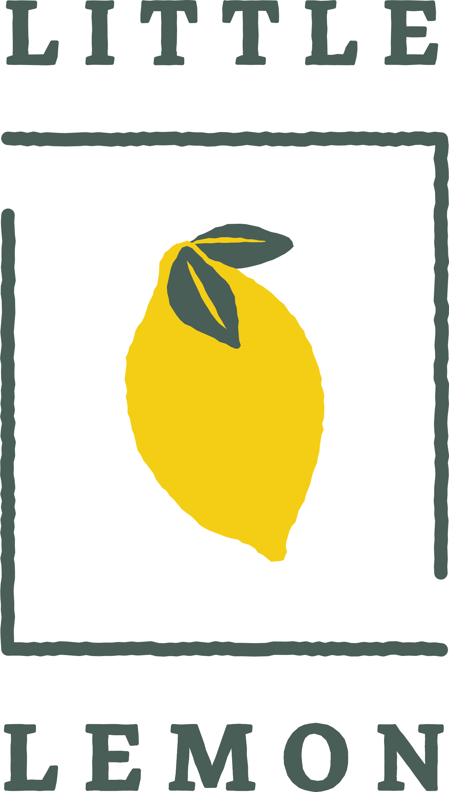

Turning data intouseful intelligence. Vittal Mani Bobbili · AI/ML Engineer
I build applications that connect machine learning models with real workflows — from computer vision pipelines to retrieval-grounded AI assistants.
Computer Vision Generative AI Python Engineering
BUILDING · LEARNING · ITERATING From model to application.
MS Data Science & AI · UCM St. Louis, Missouri Expected graduation · May 2027
01 / SELECTED WORK
Ideas, engineered. Four projects across language,
All projects Generative AI Computer Vision
02 / THE ENGINEER
Curiosity meets I’m pursuing an MS in Data Science and Artificial Intelligence at the University of Central Missouri. My work spans Python backend services, data processing, and applied machine learning.
I’m interested in AI/ML and Generative AI internships where I can build useful tools, evaluate their behavior, and improve how they work.
Connect on LinkedIn ↗ PROFESSIONAL EXPERIENCE
AI / ML Engineer Zemoso Technologies · Hyderabad
July 2023 – May 2025
Developed Python and FastAPI backend services and REST APIs. Worked on data preparation and processing workflows with Pandas, NumPy, Kafka, and PySpark. Integrated backend APIs with frontend applications and containerized services using Docker. EDUCATION
MS · Data Science & Artificial Intelligence University of Central Missouri · May 2025 – May 2027 (expected)
GPA: 3.83 / 4.00
B.Tech · Computer Science & Engineering KG Reddy College of Engineering & Technology · 2020 – 2024
03 / TOOLKIT
The tools behind the work. Selected technologies and methods
Programming Python Java JavaScript TypeScript SQL Dart
Machine learning PyTorch TensorFlow / Keras scikit-learn Transfer learning Model evaluation
Computer vision YOLO OpenCV Object detection Image classification EasyOCR / Tesseract
Generative AI LLM workflows RAG Embeddings Semantic search Prompt engineering Tool calling
Backend & data FastAPI REST APIs Pandas NumPy MySQL PostgreSQL Kafka PySpark
Application engineering React Flutter Docker Kubernetes Git / GitHub CI/CD
04 / MORE TO EXPLORE
Beyond the model. 
WEB DEVELOPMENT
Little Lemon A restaurant landing page exploring layout, visual hierarchy, and frontend development.
Visit website ↗ WEB DEVELOPMENT
Basic Banking Website A web development internship project completed at CodersCave.
Visit website ↗ MOBILE APPLICATION / MANUSCRIPT
Vindu A Flutter application for catering services, chef hiring, and food donation.
“Vindu – A Catering Services and Chef Hiring Mobile Application” — manuscript submitted to AIP; acceptance has not been confirmed.
05 / CONTINUOUS LEARNING
Courses & certificates. Additional coursework: Introduction to Front-End Development, Programming with JavaScript, and HTML and CSS in Depth.